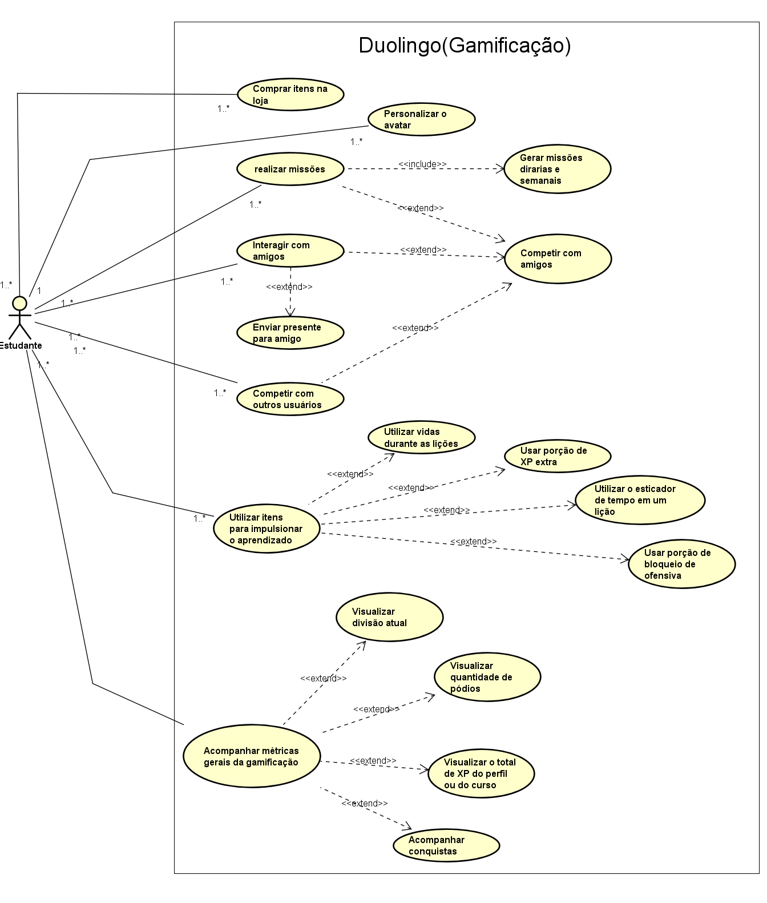

Diagramas de Casos de Uso#
A seguir, a figura do diagrama de Casos de Uso construído com base na gamificação do aplicativo Duolingo :
 Figura 2 - Diagrama do Duolingo(Gamificação)
Autores: Guilherme Silva Dutra, Raquel Ferreira Andrade, 2024
Especificação dos casos de uso#
A seguir, as tabelas de especificações de cada Caso de Uso do diagrama criado:
Caso de Uso - Comprar itens na loja#
| Campo | Descrição |
|---|---|
| Caso de Uso | Comprar itens na loja |
| Descrição | O usuário compra itens na loja, o que envolve comprar itens com dinheiro real ou com outros itens do aplicativo |
| Requisitos | RF23, RF24, RNF38, RNF49 |
| Atores | Estudante |
| Frequência de Uso | Baixa |
| Pré-condições | Conexão à internet Ter uma conta no aplicativo Ter um cartão salvo no Google Play ou Apple Store ou ter cristais suficientes para comprar outros itens da loja |
| Fluxo principal | 1. O usuário loga na sua respectiva conta 2. Entra na loja fornecida pelo aplicativo 3. Seleciona o item que deseja comprar 4. Aparece uma modal de confirmação 5. Paga com cristais pelo item 6. O usuário é redirecionado para a loja e recebe o item comprado |
| Fluxos alternativos | FA1 - Comprar item com dinheiro real 1. O usuário loga na sua respectiva conta 2. Entra na loja fornecida pelo aplicativo 3. Seleciona o item que deseja comprar 4. Aparece uma modal para confirmar a compra com o cartão 5. Confirma o pagamento 6. O usuário é redirecionado para a loja e recebe o item comprado |
| Fluxos de exceção | FE1 - Cartão recusado 1. O usuário loga na sua respectiva conta 2. Entra na loja fornecida pelo aplicativo 3. Seleciona o item que deseja comprar 4. Aparece uma modal para confirmar a compra com o cartão 5. Ao tentar confirmar, aparece uma mensagem dizendo que o cartão foi recusado 6. O usuário é redirecionado para a loja FE2. Não tem cristais o suficiente 1. O usuário loga na sua respectiva conta 2. Entra na loja fornecida pelo aplicativo 3. Seleciona o item que deseja comprar 4. Aparece uma modal de confirmação 5. Ao tentar confirmar a compra, aparece uma outra modal 6. Na nova modal, aparece uma mensagem dizendo que o usuário não tem cristais suficientes e opções de compra de cristais com dinheiro real são apresentadas 7. Ou o usuário clica na opção "agora não" e retorna para a loja, ou então ele compra mais cristais e depois realiza a compra do item desejado anteriormente |
| Pós-condições | O usuário efetua a compra e recebe o item comprado |
| Data da Criação | 13/08 |
Caso de Uso - Personalizar o avatar#
| Campo | Descrição |
|---|---|
| Caso de Uso | Personalizar o avatar |
| Descrição | O usuário edita a aparência do seu avatar dentre as opções disponíveis |
| Requisitos | RF04, RF05, RNF38 |
| Atores | Estudante |
| Frequência de Uso | Baixa |
| Pré-condições | Conexão à internet Entrar na conta |
| Fluxo principal | 1. O usuário entra na sua conta 2. Clica na aba de perfil 3. Clica em cima do seu avatar e é direcionado para a tela de edição do avatar 4. Personaliza o avatar como deseja 5. Confirma clicando na opção de Pronto 6. O usuário é redirecionado para a tela do perfil |
| Fluxos de exceção | FE1 - Faz alterações no avatar, mas cancela 1. O usuário entra na sua conta 2. Clica na aba de perfil 3. Clica em cima do seu avatar e é direcionado para a tela de edição do avatar 4. Personaliza o avatar 5. Muda de ideia e cancela as alterações clicando no botão em forma de X 6. As alterações não são salvas e o usuário é redirecionado para a tela do perfil |
| Pós-condições | O avatar do usuário é alterado visualmente conforme o desejado |
| Data da Criação | 13/08 |
Caso de Uso - Realizar Missões#
| Campo | Descrição |
|---|---|
| Caso de Uso | Realizar missões |
| Descrição | Durante a execução de algumas atividades, o usuário alcança determinados marcos e, dessa forma, realiza missões. |
| Requisitos | RF02, RF14, RNF38 |
| Atores | Estudante |
| Frequência de Uso | Alta |
| Pré-condições | Conexão à internet Entrar na conta Ter um curso selecionado Ter missões disponíveis a serem realizadas Dependendo da missão, seguir algum amigo Ter ao menos uma lição já realizada naquela semana |
| Fluxo principal | 1. O usuário entra na sua conta 2. Entra na página de missões, acionando o Caso de Uso "Gerar Missões diárias e semanais" e checa as missões disponíveis 3. Começa a realizar as lições para cumprir as missões 4. Depois de realizar uma missão, recebe a recompensa associada a ela |
| Fluxos alternativos | FA1 - Missões que não envolvem a realização de lições 1. O usuário entra na sua conta 2. Entra na página de missões, acionando o Caso de Uso "Gerar Missões diárias e semanais" e checa as missões disponíveis 3. Realiza a ação necessária para cumprir a(s) missão(ões), como, por exemplo, mandar um presente para um amigo, avançar numa liga e aumentar a sua ofensiva 4. Depois de realizar uma missão, recebe a recompensa associada a ela FA2 - Realizar uma missão entre amigos 1. O usuário entra na sua conta 2. Entra na página de missões e checa a missão disponível em relação a um determinado amigo, acionando o Caso de Uso "Competir com amigos" 3. Realiza a ação necessária para cumprir a missão, como, por exemplo, mandar um presente para um amigo, avançar numa liga e aumentar a sua ofensiva 4. Depois de realizar uma missão, recebe a recompensa associada a ela 5. Além disso, salva no histórico da competição com esse amigo que o usuário realizou mais uma missão |
| Fluxos de exceção | FE1 - Missão não totalmente finalizada 1. O usuário entra na sua conta 2. Entra na página de missões, acionando o Caso de Uso "Gerar Missões diárias e semanais" e checa as missões disponíveis 3. Tenta realizar as lições ou ações associadas a uma determinada missão 4. Por algum motivo, não atinge o objetivo necessário e o tempo da missão se esgota 5. Aquela missão desaparece da lista de missões disponíveis e o usuário não recebe nenhuma recompensa por isso FE2 - Não tem cristais o suficiente para enviar um presente para cumprir uma missão 1. O usuário entra na sua conta 2. Realiza a primeira lição da semana 3. Checa a aba de missões e vê que está em uma missão com o amigo 4. Nessa aba de missão com um amigo, ele clica na opção de dar um presente 5. Um modal aparece e ele clica em confirmar o envio do presente, mas um novo modal aparece 6. Na nova modal, aparece uma mensagem dizendo que o usuário não tem cristais suficientes e opções de compra de cristais com dinheiro real são apresentadas 7. Ou o usuário clica na opção "agora não" e retorna para a página de missões, ou então ele compra mais cristais e depois realiza o envio do presente (item) desejado anteriormente |
| Pós-condições | O usuário completa uma determinada missão e recebe uma recompensa associada a ela. |
| Data da Criação | 13/08 |
Caso de Uso - Interagir com amigos#
| Campo | Descrição |
|---|---|
| Caso de Uso | Interagir com amigos |
| Descrição | Após encontrar a conta de outra pessoa no Duolingo, você começa a segui-la e interagir com ela dentro do app |
| Requisitos | RF17, RF29, RFN38 |
| Atores | Estudante |
| Frequência de Uso | Baixa |
| Pré-condições | Conexão à internet Entrar na conta Ter um curso selecionado Seguir ao menos um amigo Dependendo da interação, é necessário ter missões disponíveis a serem realizadas com um determinado amigo |
| Fluxo principal | 1. O usuário entra na sua conta 2. Vai na aba de perfil 3. Seleciona a opção de adicionar amigos 4. Encontra uma outra conta e começa a segui-la 5. Por fim, essa pessoa será adicionada como um amigo |
| Fluxos alternativos | FA1 - Dar presente para um amigo 1. O usuário entra na sua conta 2. Checa a aba de missões e vê que está em uma missão com o amigo 3. Nesse quadrado de missão com um amigo, ele clica na opção de dar um presente 4. Um modal aparece e ele gasta alguns cristais para enviar algum presente (item) para o amigo, acionando o caso de uso "Dar presente para um amigo" 5. O modal desaparece e o usuário continua na tela de missões FA2 - Comemorar uma conquista de um amigo 1. O usuário entra na sua conta 2. Acessa a página de novidades 3. Clica em "Comemore" para comemorar a conquista do amigo, acionando o caso de uso "Comemorar uma conquista de um amigo" 4. Após isso, o amigo recebe uma notificação que o usuário comemorou uma conquista dele FA3 - Competir com amigos 1. O usuário entra na sua conta 2. Entra na página de missões e checa a missão disponível em relação a um determinado amigo, acionando o Caso de Uso "Competir com amigos" 3. Realiza a ação necessária para cumprir a missão, como exemplo, mandar um presente para um amigo, avançar numa liga e aumentar a sua ofensiva 4. Depois de realizar uma missão, recebe a recompensa associada a ela 5. Além disso, salva no histórico da competição com esse amigo que o usuário realizou mais uma missão |
| Pós-condições | Estar seguindo a conta de uma pessoa Finalizar uma missão contra um amigo Ter comemorado uma conquista de um amigo |
| Data da Criação | 15/08 |
Caso de Uso - Competir com outros usuários#
| Campo | Descrição |
|---|---|
| Caso de Uso | Competir com outros usuários |
| Descrição | O usuário consegue entrar em competições com outros usuários, seja um amigo ou não. |
| Requisitos | RF14, RF16, RF17, RNF38 |
| Atores | Estudante |
| Frequência de Uso | Alta |
| Pré-condições | Conexão à internet Para competir nas ligas, o usuário deve ter realizado pelo menos 5 lições em qualquer unidade Para competir com amigos, o usuário deve possuir amigos Para as missões, o usuário deve ter realizado a primeira lição da semana |
| Fluxo principal | 1. O usuário entra na sua conta 2. Acessa a tela das ligas, acionando o Caso de Uso "Competir nas ligas" 3. Checa a sua posição baseada no XP 4. Começa a fazer mais lições para aumentar ou manter a sua colocação 5. Ao final da semana, o usuário, baseado na sua colocação na liga, ou avança para a próxima, ou se mantém na mesma, ou cai para a liga anterior |
| Fluxos alternativos | FA1 - Competir com amigos 1. O usuário entra na sua conta 2. Entra na página de missões e checa a missão disponível em relação a um determinado amigo, acionando o Caso de Uso "Competir com amigos" 3. Realiza a ação necessária para cumprir a missão, como, por exemplo, mandar um presente para um amigo, avançar numa liga e aumentar a sua ofensiva 4. Depois de realizar uma missão, recebe a recompensa associada a ela 5. Além disso, salva no histórico da competição com esse amigo que o usuário realizou mais uma missão |
| Pós-condições | O usuário pode receber recompensas devido às competições. O usuário pode avançar ou descer numa liga. |
| Data da Criação | 14/08 |
Caso de Uso - Utilizar itens para impulsionar o aprendizado#
| Campo | Descrição |
|---|---|
| Caso de Uso | Utilizar itens para impulsionar o aprendizado |
| Descrição | O usuário, com o objetivo de impulsionar o seu aprendizado, utiliza itens como vidas, porções de XP, bloqueadores de ofensiva e esticadores de tempo. |
| Requisitos | RF23, RF24, RF34, RNF38 |
| Atores | Estudante |
| Frequência de Uso | Média |
| Pré-condições | Conexão à internet O usuário precisa estar na sua conta Possuir algum item, como vidas, porções, esticadores de tempo e bloqueadores de ofensiva Estar em uma lição que permita o uso de algum de seus itens |
| Fluxo principal | 1. O usuário entra na sua conta 2. Começa a realizar uma lição 3. O usuário responde uma questão incorretamente 4. Uma vida é consumida automaticamente, acionando o Caso de Uso “Utilizar vidas durante as lições” 5. O usuário continua na lição com uma vida a menos |
| Fluxos alternativos | FA1 - Usar porção de XP 1. O usuário entra na sua conta 2. Vai na aba da loja 3. Consome uma porção de XP, acionando o Caso de Uso “Usar porção de XP extra” 4. Inicia uma lição 5. Finaliza uma lição 6. Se o tempo da porção ainda estiver ativo, o usuário ganha o dobro de XP naquela lição FA2 - Utilizar o esticador de tempo 1. O usuário entra na sua conta 2. Inicia uma lição 3. Durante a lição, o tempo acaba 4. Um modal aparece perguntando se ele deseja utilizar um esticador de tempo 5. O usuário confirma que sim, acionando o Caso de Uso “Utilizar o esticador de tempo em uma lição” 6. O modal desaparece e o usuário continua a lição com a quantidade de tempo definida pelo esticador FA3 - Usar o bloqueador de ofensiva 1. O usuário deixa de acessar o aplicativo por um dia 2. O usuário entra na sua conta 3. Um modal aparece na tela dizendo que a ofensiva foi quebrada 4. O usuário clica em utilizar um bloqueador de ofensiva, acionando o Caso de Uso “Usar porção de bloqueio de ofensiva” 5. A ofensiva continua na sua contagem, mas é registrado que ele utilizou o bloqueador para manter a frequência FA4 - Utilizar cristais para comprar vidas 1. O usuário entra na sua conta 2. Percebe que há possibilidade de comprar vidas 3. Clica no ícone das vidas na tela inicial 4. Compra uma vida clicando em “Recuperar vidas” |
| Fluxos de exceção | FE1 - As vidas acabam durante a realização de uma lição 1. O usuário entra na sua conta 2. Inicia uma lição na tela inicial 3. Responde uma questão incorretamente, consumindo sua última vida restante 4. O usuário é redirecionado para comprar mais vidas 5. Após a compra, o usuário retorna à lição |
| Pós-condições | O usuário impulsiona o seu aprendizado continuando uma lição, ganhando mais tempo numa lição, mantendo sua ofensiva ou dobrando o seu XP em uma determinada lição |
| Data da Criação | 14/08 |
Caso de Uso - Acompanhar métricas gerais da gamificação#
| Campo | Descrição |
|---|---|
| Casos de Uso | Acompanhar métricas gerais da gamificação |
| Descrição | O usuário consegue visualizar e acompanhar algumas métricas gamificadas relacionadas ao seu histórico no app |
| Requisitos | RF15, RF18, RF22, RFN38 |
| Atores | Estudante |
| Frequência de Uso | Alta |
| Pré-condições | - Conexão à internet - O usuário precisa estar na sua conta - O usuário precisa ter um curso em andamento |
| Fluxo principal | 1. O usuário entra na sua conta 2. Na página das lições ele clica no ícone do fogo (ofensiva) 3. Uma nova página aparece acionando o Caso de Uso “Visualizar ofensiva” 4. Nessa página o usuário consegue visualizar a quantidade de ofensiva que ele tem, além de ver por um calendário os dias em que estudou no aplicativo |
| Fluxos alternativos | FA1 - Visualizar a divisão em que o usuário está 1. O usuário entra na sua conta 2. Acessa a tela de ligas, acionando o Caso de Uso “Visualizar divisão atual” 3. Após isso ele vê a liga em que se encontra, a sua posição na liga, o tempo restante e um breve histórico da quantidade de posições alcançadas ou perdidas no dia FA2 - Visualizar a divisão em que o usuário está, o seu XP total na conta, a quantidade da sua ofensiva, e o total de pódios 1. O usuário entra na sua conta 2. Acessa a tela de perfil 3. E na parte de visão geral visualiza a divisão em que se encontra, o seu XP total na conta, a quantidade da sua ofensiva atual, e o total de pódios FA3 - Visualizar conquistas 1. O usuário entra na sua conta 2. Na página do perfil ele clica na opção de ver conquistas acionando o Caso de Uso “Acompanhar conquistas” 3. Uma nova página aparece e o usuário vê todas as suas conquistas e recordes pessoais até o momento FA4 - Visualizar XP em um curso específico 1. O usuário entra na sua conta 2. Acessa a tela de perfil 3. Clica no ícone dos cursos 4. Após isso ele é direcionado para uma tela onde consegue visualizar o XP que ele possui em cada curso em específico |
| Pós-condições | O usuário acompanha todas as suas métricas gamificadas relacionadas ao seu progresso |
| Data da Criação | 15/08 |
Gravações#
Vídeo 1: Especificação dos casos de uso
Autores: Guilherme Silva Dutra, Raquel Ferreira Andrade
Histórico de Versão#
| Data | Versão | Descrição | Autor |
|---|---|---|---|
| 14/08/2024 | 1.0 | Criação do documento | Guilherme Silva Dutra, Raquel Ferreira Andrade |
| 22/08/2024 | 1.1 | Adição das gravações | Raquel Ferreira Andrade |